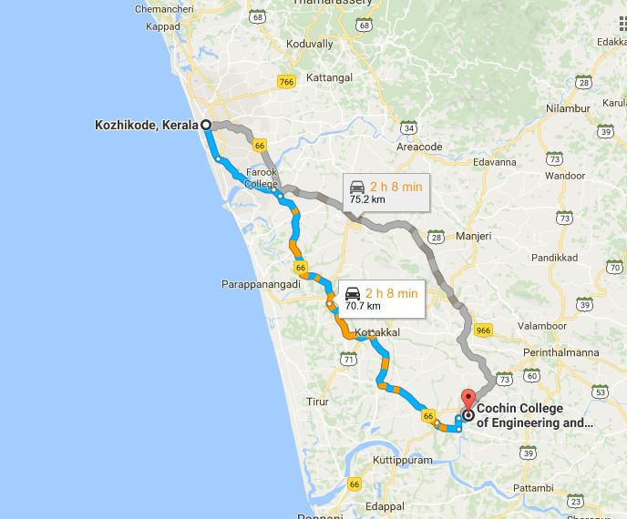

ADDRESS:
Cochin College Of Engineering And Technology,
Athippatta,
Edayur P.O ,
Valanchery(VIA),
Malappuram

Cochin College Of Engineering And Technology,
Athippatta,
Edayur P.O ,
Valanchery(VIA),
Malappuram
The college was established in 2010. It is 71 Km North of Calicut.
Prayer meeting:Dont have prayer meeting or contact.
How to reach:Catch Kuttipuram Bus from New Bus stand and get down Valanchery. Catch Perinthalmanna or Malappuram bus from there and get down at punnamchola bus stop. Take auto and reach college.
Possibility:MES Medical College can reach the College and build the contacts.